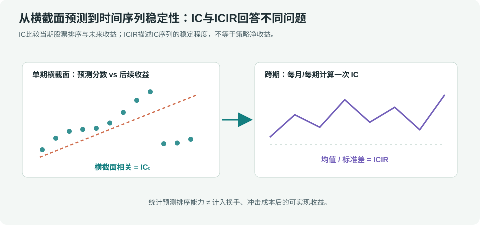
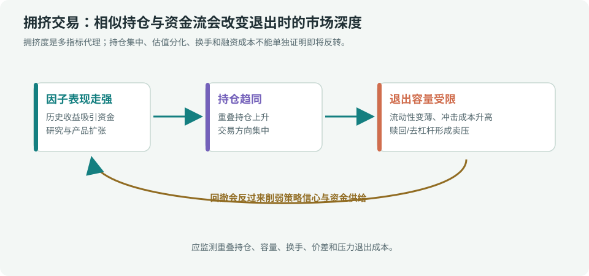

CHAPTER 20 · EVIDENCE-BASED INVESTING
多因子模型：因子构建、IC/IR与拥挤度
拆解Fama–French五因子、横截面标准化、IC/ICIR、组合约束和因子拥挤，区分模型解释力与可实现收益。
多因子模型：把多个经济维度拆开，而不是叠加五条指标线
单一指标可能混合多个经济来源：低估值可能同时暴露于行业、规模、财务困境与周期；高历史收益也可能只是承担了更高市场风险。多因子研究尝试把收益或横截面预期收益拆成若干可解释维度，并检验每个维度在控制其他风险后是否仍提供信息。
要先区分两个问题：时间序列因子模型解释某个组合收益如何随市场因子变化；横截面选股模型则在某一时点对股票排序，预测下一期相对收益。两者相关但不是同一个回归问题。
Fama–French五因子：定义、构建与适用范围
Fama与French（2015）提出的五因子模型包含市场超额收益MKT、规模SMB、价值HML、盈利RMW和投资CMA。Kenneth French数据库说明其经典构建方法基于规模与账面市值比、经营盈利能力、投资强度的2×3组合排序。SMB是小市值组合相对大市值组合的收益差；HML比较高与低账面市值比；RMW比较稳健与弱经营盈利；CMA比较保守与激进投资。
五因子模型在原论文样本中改善了对规模、价值、盈利和投资模式的描述，但论文也指出模型对某些小公司低收益现象解释不足。模型结果依赖样本、资产定义和组合构造，不能将美国CRSP样本中的因子收益直接当作A股或其他市场的历史收益。
因子构建：方向、时点、标准化和中性化都要事先固定
构建一个选股因子需要先定义经济逻辑和计算口径。例如价值可以用账面权益/市值，盈利质量可以用经营利润/账面权益或现金流质量指标，投资因子可以用资产增长率的反向指标。必须说明是否剔除金融行业、负账面权益、异常值、上市时间过短证券，以及财务数据的披露滞后。
将因子方向统一为“分数越高代表目标暴露越强”后，可在横截面内温莎化、Z标准化，并选择是否进行行业或规模中性化。标准化权重不等于经济重要性；如果两个因子高度相关，简单各占一半可能重复计量同一风险。
多因子综合分数实验：把各因子方向统一后再加权
假设某只股票经处理后的价值、质量、动量、保守投资Z分数分别为1.2、0.8、0.4、−0.2，权重为30%、30%、20%、20%，综合分数为0.64。这里“保守投资”分数已统一方向：低资产增长对应较高保守投资分数。综合分数只表示相对横截面位置，不是收益率或目标价。
IC与ICIR：预测排序能力和跨期稳定性要分开
信息系数IC通常衡量某一时点横截面中因子分数与随后实现收益之间的相关性。Pearson IC使用线性相关，Rank IC使用Spearman秩相关，能降低极端值对排序关系的影响。必须保证因子在t时点可用、收益发生在t之后，且收益区间与交易执行时点匹配。
若每月得到一条IC序列，IC均值描述平均预测方向与强度，IC标准差描述其跨期波动；常见ICIR为均值/标准差。是否再乘以√12进行年化，取决于报告约定，必须明确。ICIR高并不保证组合收益高，因为权重、换手、冲击成本、风险约束和容量都还没有进入这个指标。

从分数到组合：风险预算和约束决定最终持仓
综合分数可转成分位数组合、行业中性组合或优化权重，但权重规则必须明确。等权、分数加权和风险加权会产生不同的规模、行业、波动率和流动性暴露。组合构建还要限制单股集中度、行业偏离、换手、成交额占比、卖空可行性和持仓容量。
对A股或其他本地市场，应重新核验上市状态、停复牌、涨跌停、交易费用、融券可得性、公司行动和退市收益处理。美国Fama–French数据库的因子构建说明是方法参考，不是可以直接复制的本地因子收益表。
因子拥挤：表现好会吸引资本，也可能改变未来交易条件
因子策略长期表现强劲时，更多投资者可能采用相似信号，造成持仓重叠、估值价差扩大、成交拥挤和退出流动性下降。若多个组合同时减仓，价格冲击可能放大损失。拥挤度可由持仓重叠、资金流、估值分化、换手、借券成本和成交容量等代理指标共同观察，但没有一个指标能单独预测反转时点。

因子择时和动态加权看起来可以在不同市场状态间调整暴露，但会增加参数搜索和模型不稳定风险。若根据历史最优区间反复选择权重，就会把因子择时本身也过拟合。稳健基准通常应包含固定权重、风险平价或简单约束组合，再与复杂模型做样本外比较。
一份多因子研究报告必须留下哪些可复核记录？
至少保存因子定义与方向、原始数据来源、可用时间戳、样本证券池、清洗规则、行业处理、排序和权重、调仓频率、成本假设、风险暴露、因子收益、IC序列、ICIR、回撤、容量与压力情景。报告所有尝试过的因子组合与参数版本，避免只展示成功配置。
检查题
- Fama–French五因子模型的五个因子是什么？动量是否属于FF5？
- 时间序列因子回归与横截面选股评分有何区别？
- 为什么财务数据要使用披露后可用的时间戳？
- IC高但换手和冲击成本很高，策略为何可能无法获利？
- 拥挤度指标能否直接预测市场反转？
参考资料与适用范围
引用资料用于核对定义、理论或研究设计。学术研究的样本和市场范围不自动适用于其他市场；本章计算器和图表中的数值均为构造示例。
- Fama & French (2015), A Five-Factor Asset Pricing Model
- Kenneth French Data Library：Five Factors (2×3)构建说明
- Ding & Sun (2023), The statistics of time varying cross-sectional information coefficients
- AQR (2021), How Do Factor Premia Vary Over Time? A Century of Evidence
- Daniel & Moskowitz (2016), Momentum Crashes